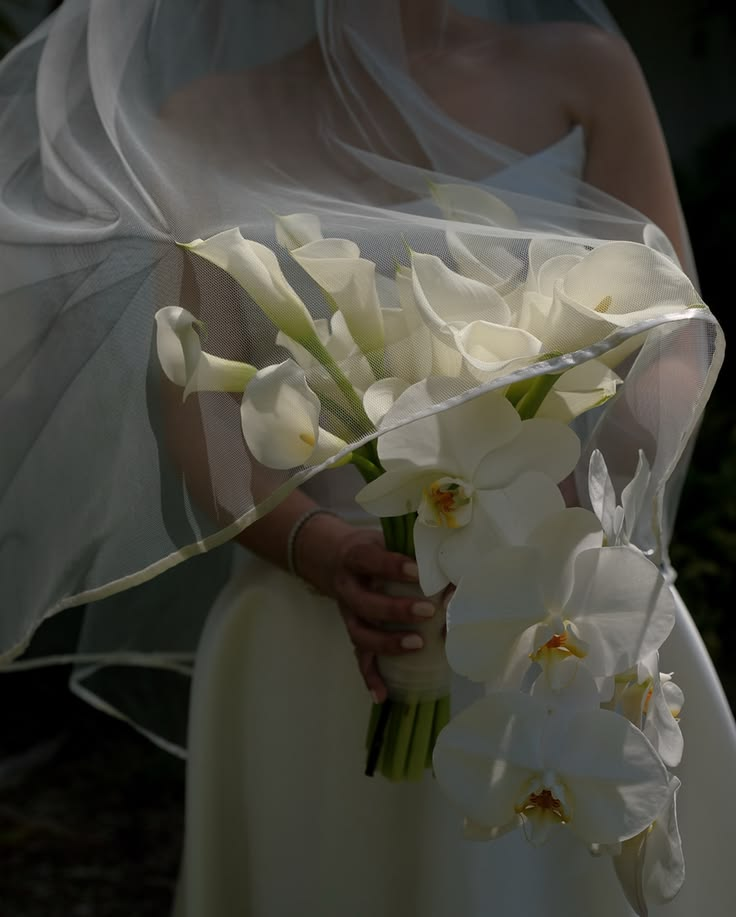
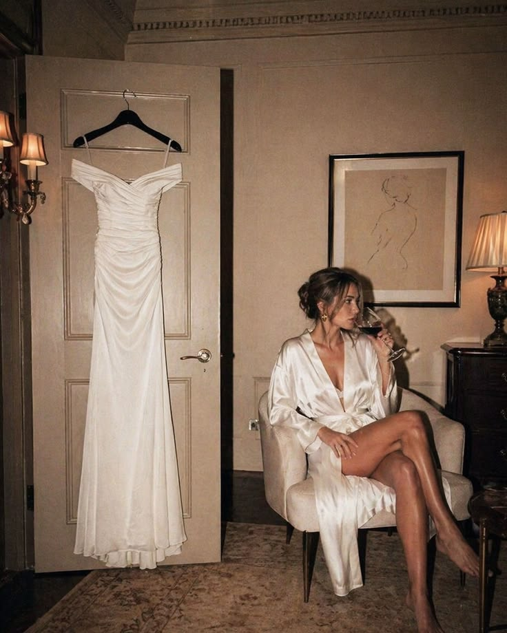
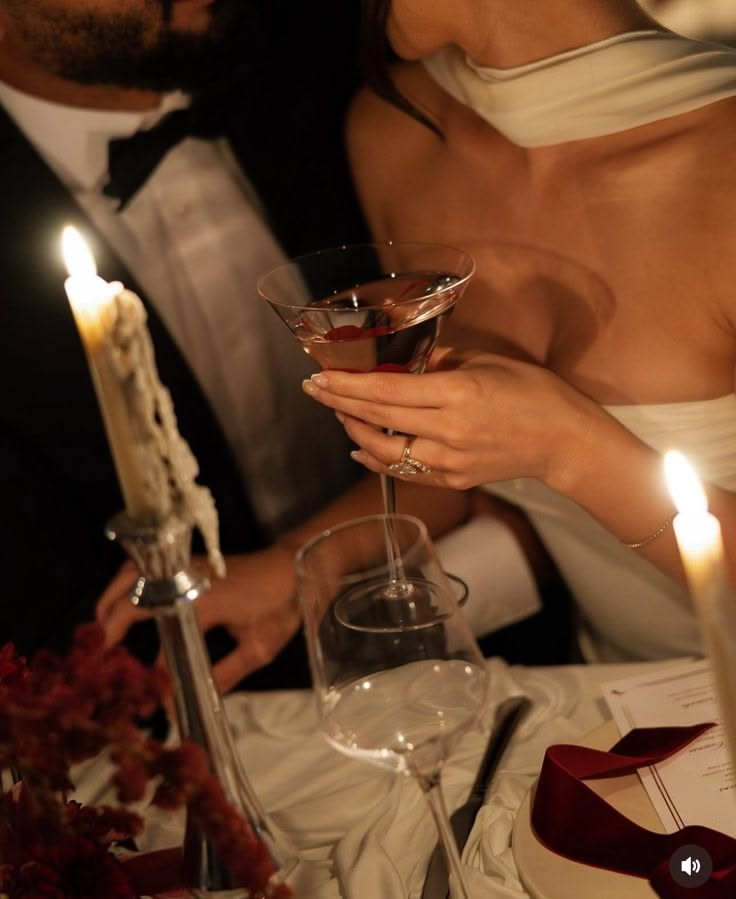
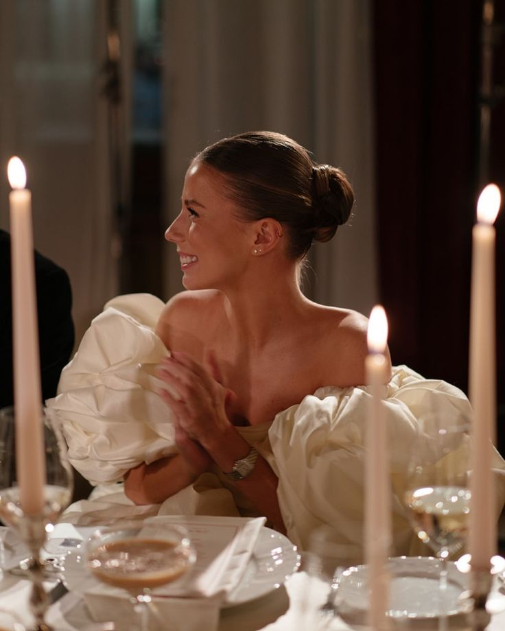
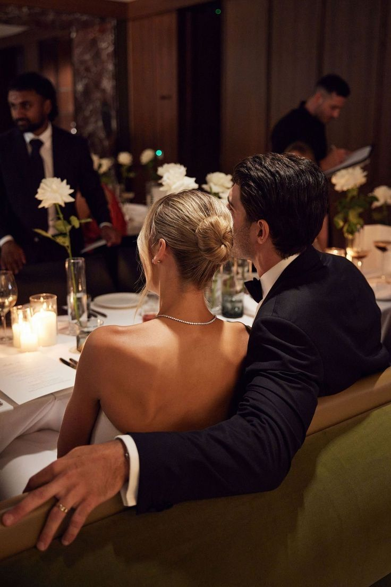
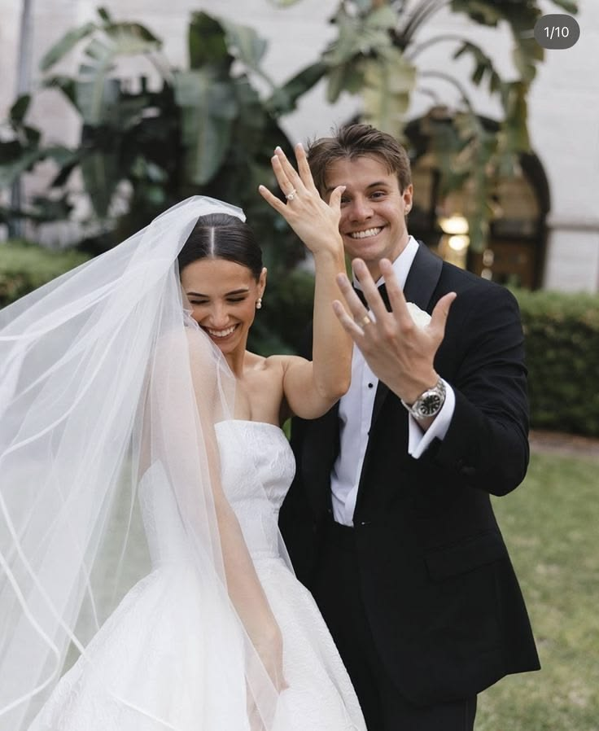
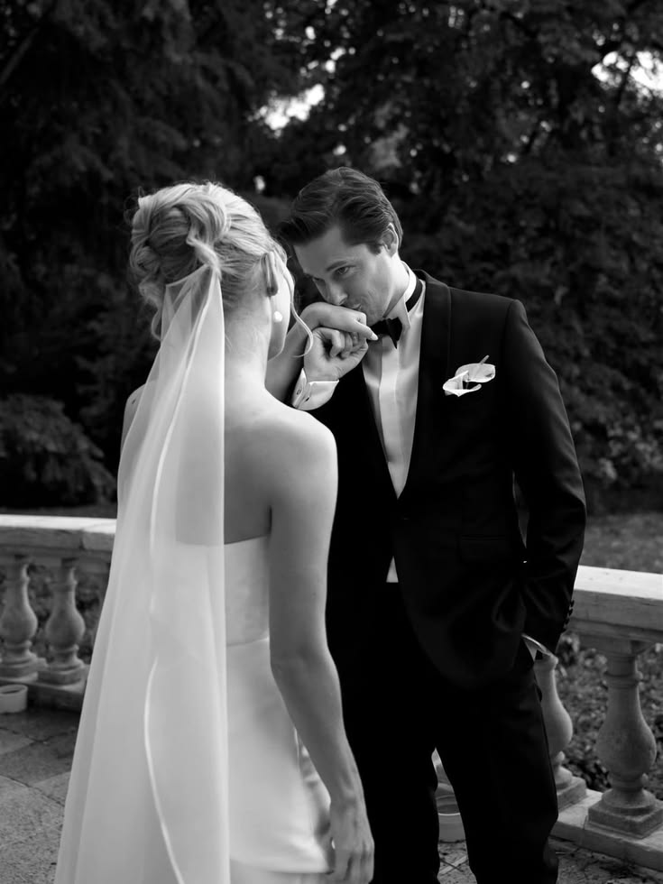
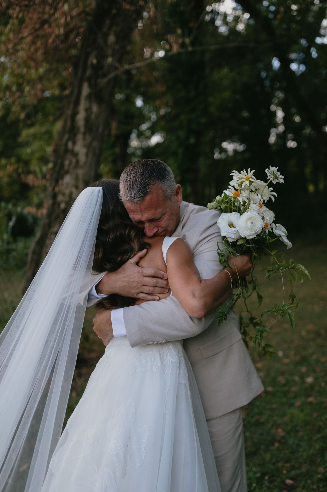

WEDDING
An evening in ivory.
An intimate celebration shaped by soft florals and thoughtful details.
Aveline Services
From the first idea to the final moment, we create celebrations that feel personal, intentional, and beautifully yours.








WEDDING
An intimate celebration shaped by soft florals and thoughtful details.
EVENT DESIGN
A carefully considered celebration built around atmosphere and detail.
PHOTOGRAPHY
Quiet gestures and fleeting memories captured with an editorial eye.